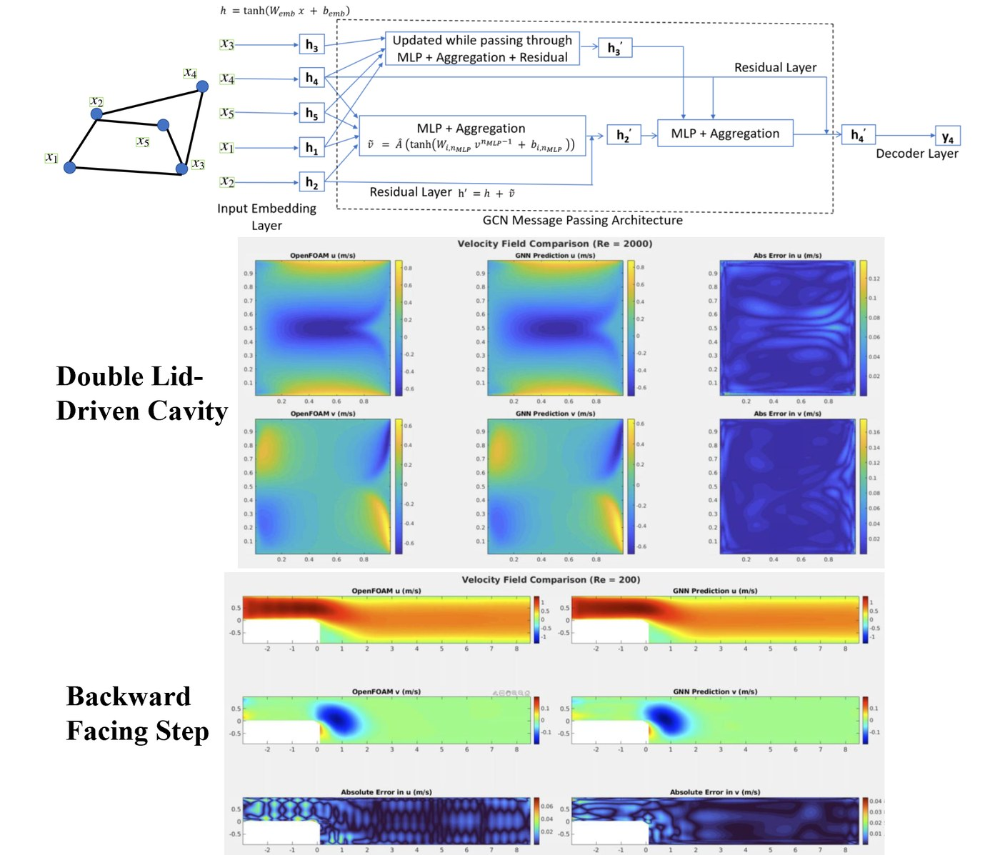

Area 1
Geometry-aware, physics-regularized graph learning for thermal-fluid systems
I designed graph neural network surrogates that operate directly on unstructured CFD meshes. The residual multilayer-perceptron graph convolutional network (ResMLP-GCN), published in Physics of Fluids (2025), takes Reynolds number and geometric descriptors as inputs and predicts coupled velocity fields for the double lid-driven cavity and backward-facing step. Trained on Re 100–2000, it reproduced the dominant flow structures at Re 3000, well beyond the training range. I then developed a physics-regularized surrogate, now under review in Physics of Fluids, that was trained on a single step height and predicted reattachment lengths and velocity fields for step heights varied by ±40%, the property required for geometry optimization and rapid design screening. I presented this work at WCCM-ECCOMAS 2026 and ASME IMECE 2025.
